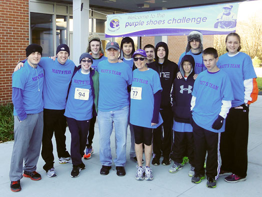

The Purple Shoes Challenge is a competitive athletic event for adults and children (ages 6+) with physical and/or sensory limitations. Purple Shoes competitors are invited to wheel, walk, or run their personal best within a 60 minute time period. Alongside other athletes on the track, each athlete competes against themselves to reach their goal and to improve their record. Athletes are expected to set their own individual goals, to train for the race, and are encouraged to sustain a year round training program. The PSC staff will work with athletes to set personal goals.
The challenge of the Purple Shoes race is to see how far each athlete can run, walk or wheel in 60 minutes. During the Purple Shoes Challenge you can rest when you need to rest, stop if you have gone as far as you can, and use your personal best distance to determine how much you will train to improve your distance each year.
This event is a great opportunity to build stronger muscles, improve your endurance, and to join in a community activity where you can make new friends, and have fun!
